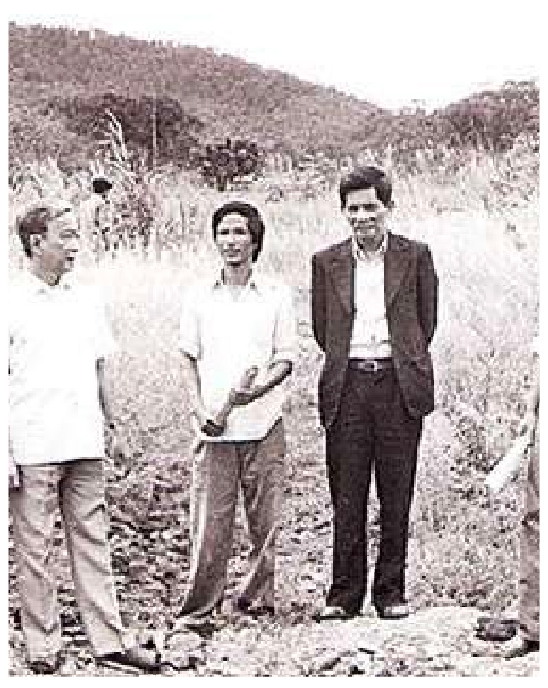

Các báo Phong hoá, Ngày nay cùng với các tác phẩm của Khái Hưng, Thạch Lam,
Nhất Linh và nhất là thơ Thế Lữ gây cho tôi một hứng thú đặc biệt. Tôi tìm thấy một luống gió mới, một
cách cảm nghĩ mới, một giọng văn mới, chân thực hơn, hấp dẫn, tươi trẻ và nhân tình hơn. Quên làm sao nỗi
day dứt say mê vì tiếng sáo thiê thai của anh Thế Lữ và nhớ mãi câu thơ lạnh lùng chua xót:
Anh đi đường anh, tôi đi đường tôi
Tình nghĩa đôi ta chỉ thế thôi!
Tôi Yêu Lưu Trọng Lư với: Con nai vàng ngơ ngác, đạp trên lá vàng khô Rồi bống hiện lên một Hoàng tử của
thơ: Xuân Diệu. Tôi chẳng thể ngờ anh học trò trung học, trên tôi mấy lớp, có mái tóc gợn sóng loà xoà với
đôi mắt ngẩn ngơ và bước chân đi như trong mộng lại chinh là chàng thi sĩ ấy. Ôi những bài thơ say đắm:
Làm sao cắt nghĩa được tình yêu
Nào có gì đâu một buổi chiều
Nó chiếm hồn ta bằng nắng nhạt
Bằng mây nhè nhẹ, gió hiu hiu…
Nhiều năm sau, cho đến tận bây giờ, tôi vẫn nhớ như in những câu thơ say lòng ấy. Chắc chắn mấy trăm ngàn
năm sau, lớp con cháu vẫn mãi yêu thơ Xuân Diệu.